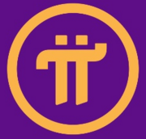
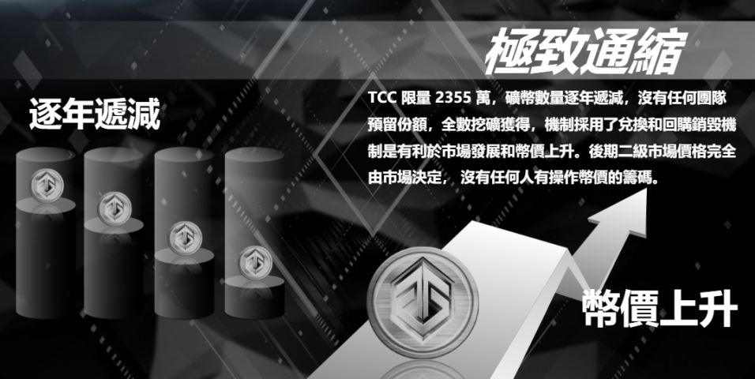

永恆算力幣
Timeless Computing Power Coin
統合區塊鏈技術應用和 POC 共識社區聯盟的發起，旨在虛空的區塊鏈上，捕捉 Timeless 和 Comeback 的共識價值。
基於 Tron Chain 公鏈開發的全球去中心化算力聚合網絡，是以算力形式發行的算力體系生態通證，採用聯合曲線（bonding curve）權益模型，總量 100% TCC 被用戶共同採挖，零預挖、零私募、零認購，代碼開源。


亮點概訴
降低用戶參與門檻，凝聚集體貢獻，聚合算力在新興礦機、礦幣、綠能礦池服務。
物理節點兌換保障
TCC 總投資 50% 部署海外主流物理礦機及持倉主流價值礦幣並提供物理全節點兌換機制。
優質礦機礦幣托底
用戶可使用 TCC 兌換多種主流礦機節點：
 IPFS 礦機節點
IPFS 礦機節點
 PHALA 礦機節點
PHALA 礦機節點
 Pi 礦機節點
灰度算力
TCC 將算力代幣化，錨定、存儲、頭部礦幣並結合 DeFi 經濟模型，從投資角度來看，TCC 算力幣具有強大優勢。
TRX 低廉手續費
TRX 波場公鏈使用者最多、費用低廉，交易速度快的優勢。
DAO 平台自治
持有 TCC 治理代幣的每個參與者都可以通過投票提議項目未來的發展。
生態賦能
節點搭建，拓展算力應用場景，致力於解決挖礦中存在可能性風險，打造算力信用生態鏈，提供便捷、獲取、流轉、交易和衍生服務。


生態服務
低折扣購買礦機硬體和節點搭建服務，支付綠能礦機方案的費用
挖礦獎勵
燃燒 TCC 並從 bonding curve 價值驗證獲得獎勵
糖果獎勵
TCC 持有者享受不定期特別優惠券，兌換生態禮品卡
社區治理
賦予了平台幣、治理幣的雙重屬性，TCC 可以發起提案，共識方向、新功能
獎勵與分配
節點搭建，拓展算力應用場景，致力於解決挖礦中存在可能性風險，打造算力信用生態鏈，提供便捷、獲取、流轉、交易和衍生服務。
| 代幣名稱 | TCC |
| 中文名稱 | 永恆算力幣 |
| 供應總量 | 2355 萬 TCC |
| 首年產量 | 235.5 萬 TCC |
| 通縮方式 | 每年餘量 10% 釋放 |
| 燃燒機制 | 銷毀 TCC 獲得虛擬礦機算力值 |
| 銷毀路徑 | 打入波場黑洞地址 |
| 參與門檻 | 整數 1 TCC 起 |
| 算力標準 | 1 TCC = 0.01 T 算力值 |
| 算力週期 | 永恆算力 |
| 經濟模型 | 稀缺性與獲取性的平衡 |
| 價值模型 | 聯合曲線（bonding curve）權益值 |
| 令牌信息 | 1 TCC = 10 U（測試階段） |
| 獲取礦機 | 以TP錢包進入DAPP智能合約獲得算力值 |
| 時間 | 年產出量 | 日產出量 |
|---|---|---|
| 2021 | 2,355,000 | 6,452 |
| 2022 | 2,119,500 | 5,806 |
| 2023 | 1,907,550 | 5,226 |
| 20NN | N | N |
| 比例 | 日產出量 | 分配 |
|---|---|---|
| 80% | 6452×80%=5161.6 | 全網算力 |
| 10% | 6452×10%=645.2 | 全球節點 |
| 10% | 6452×10%=645.2 | 生態開發 |
| 開礦人數 | 增加永久算力 |
|---|---|
| 1 人 | +25% |
| 2 人 | +30% |
| 3 人 | +35% |
| 4 人 | +40% |
| 5 人 | +45% |
| N 人 | +50% |
| 日幣量 | 每天產生 645.2TCC，未產生節點人之前，幣量累計在節點池 |
| 節點人 | TCC Node 總數 36 名，採平均分配製 |
| 條件 | 個人算力達到 500T 獲取資格，按照每天蜂后算力排名 |
金融證照
永恆數字科技集團 ETERNAL DIGITAL TECHNOLOGY(GROUP)PTE.LTD. 成立於新加坡，運營中心位於寶島台北，擁有美國MSB牌照，是一家服務數位礦業、數字內容、數字藝術通證。其中在美國三籓市、日本大阪、韓國首爾、馬來西亞等地設有服務中心，業務覆蓋全球，布局綠能數字礦業、大型沉浸式數字影像展、NFT數字藝術拍賣、衍生服務、慈善公益等板塊。

FAQ
我們提供一些問題的反饋，或許能解決許多疑問！
TCC 是建設在波場公鏈上的 DAPP，沒有中心化應用程式。
目前可以從波場官方的 TRONLINK 波寶錢包和 TP 錢包進入 DAPP。
天空之島是由新加坡永恆數字科技集團、台灣區塊鏈技術人員、以及 POC 共識社區聯盟共同搭建。
台灣運營總部可以考察，國外辦事處屬於技術單位，暫時不提供考察。
不論是綠能礦業、數字 IP、NFT 藝術拍賣，相關的合約合同都會有公示公告，請關注各群資訊。
每一筆交易所燃燒的 GAS 費，會依照不同時的時段網路擁堵情況而變化。
因為使用 USDT 兌換 TCC 和 TCC 兌換 USDT 是兩個不同的池，所以智能合約會有兩次確認動作。
類似於交易手續費，但會沉澱于池中，如果需要使用會公告。
可以通過分享方式、開礦算力和礦圈算力都能增加自身的永久算力。
因為 TCC 運行於波場公鏈上，必須要充值 TRX 作為 GAS 費才能夠順利操作。
每天的收益統一於晚上 12 點結算，但會依照每個用戶的燃燒啟動時間發放。
每天的收益統一於晚上 12 點結算，但會依照每個用戶的燃燒啟動時間發放。
所有生態回購銷毀 TCC 都會發出公告。
TCC 運行在波場公鏈上，資料開源、公開透明、無預挖、無私募、無公募，完全由社區投票自治來維護。
TCC 的幣價螺旋上升模型是一個等邊三角形，通過算力池、燃燒率、流通量來決定幣價。
目前波場公鏈是國際上使用者數較多、速度較快、GAS 費用較便宜的公鏈，更適合長期發展。
TCC 代碼是開源的，能夠在 GITHUB 上查詢。
能，平台後續會公布合約地址和黑洞地址。
10% 生態建設的板塊，用於搭建天空之島生態鏈以及其未來的收益。
TCC 是採用燃燒銷毀機制，並且通過生態回購、再次銷毀，使市場流通量保持稀缺，確保價格穩定。
任何投資都有風險，但 TCC 是一個 DAO 社區自治平台，沒有任何人可以操控，相對公平。
前期通過社區推廣積累用戶數量及黏性，後期通過生態搭建賦能 TCC 永續發展。
台灣項目、高共識、低門檻、永久挖礦、生態托底、公開透明。
項目目前在以下的社交或社群互動，歡迎加入！
Telegram 電報社群
TCC全球社區(中國)
https://t.me/tccnode_cn
TCC全球社區(台北)
https://t.me/tccnode_official
FaceBook 永恆算力海外社區(社群)
https://www.facebook.com/groups/866017100721712
Twitter 推特社交
https://twitter.com/tccnode
Line 賴社群(台北、日本)
https://line.me/ti/p/mNh9DV09Bd
Reddit 紅迪社交投票
https://reddit/u/tccnode
Telegram 電報社群
TCC全球社區(中國)
https://t.me/tccnode_cn
TCC全球社區(台北)
https://t.me/tccnode_official
FaceBook 永恆算力海外社區(社群)
https://www.facebook.com/groups/866017100721712
Twitter 推特社交
https://twitter.com/tccnode
Line 賴社群(台北、日本)
https://line.me/ti/p/mNh9DV09Bd
Reddit 紅迪社交投票
https://reddit/u/tccnode